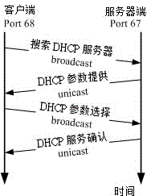

12.1 DHCP 运作的原理
在正式的进入 DHCP (Dynamic Host Configuration Protocol) 服务器设定之前，我们先来认识一下 DHCP 这个协议吧！还有，需要了解的是，我们是否『一定』得设定 DHCP 这个服务器呢？这里都需要厘清一下概念喔！
12.1.1 DHCP 服务器的用途
在开始 DHCP 的说明之前，我们先来复习一下之前在第二章网络基础里面提到的几个网络参数吧！ 要设定好一个网络的环境，使计算机可以顺利的连上 Internet ，那么你的计算机里面一定要有底下几个网络的参数才行，分别是：
- IP, netmask, network, broadcast, gateway, DNS IP
其中，那个 IP, netmask, network, broadcast 与 gateway 都可以在 /etc/sysconfig/network-scripts/ifcfg-eth[0-n] 这档案里面设定，DNS 服务器的地址则是在 /etc/resolv.conf 里头设定。只要这几个项目设定正确，那么计算机应该就没问题的可以上网了！ 所以说，你家里面的 3, 4 部计算机，你都可以手动的来设定好你所需要的网络参数， 然后利用 NAT 服务器的功能，就可以大摇大摆的连上 Internet 了！真是不错 ^_^，不是吗？
好了，现在让我们换一个大一些些的场景吧！假设你是学校宿舍的网络管理员，所管理的学生计算机大概有 100 部好了，那么你怎么设定好这 100 部的计算机呢？
- 直接每一部计算机都让你登门拜访手动的去设定好？
- 将所有的学生都集合起来，然后精神训话.....喔不！是直接教导一下怎么设定？还是
- 藉由一部主机来自动的分配所有的网络参数给宿舍内的任何一部计算机？
这三种解决方案所需要的时间都不相同，如果你选择的是(1)，那么鸟哥个人认为，你不是工作狂就是疯掉了， 因为所要花费的时间与你所得的薪水与付出的心力是完全不成比例的。如果选择是(2)，那么很可能你会被挂上独裁者、 没良心的管理员的称号！如果是选择(3)呢？恭喜你！这个方案的管理时间花费最短，也是最不麻烦的作法啦！
呵呵！知道鸟哥要说些什么了吗？是的！这个 DHCP (Dynamic Host Configuration Protocol) 服务器最主要的工作，就是在进行上面的第三个方案，也就是自动的将网络参数正确的分配给网域中的每部计算机， 让客户端的计算机可以在开机的时候就立即自动的设定好网络的参数值，这些参数值可以包括了 IP、netmask、network、gateway 与 DNS 的地址等等。如此一来，身为管理员的你，只要注意到这一部提供网络参数的主机有没有挂掉就好了， 其他同学们的个人计算机，哈！你想都不必想要怎么去帮忙！因为 DHCP 主机已经完全都帮你搞定啦！ ^_^！ 阿！当管理员最大的幸福就是可以喝喝茶、聊聊天就能控管好一切的网络问题呢！
12.1.2 DHCP 协议的运作方式
你必需要知道的是，DHCP 通常是用于局域网络内的一个通讯协议，他主要藉由客户端传送广播封包给整个物理网段内的所有主机， 若局域网络内有 DHCP 服务器时，才会响应客户端的 IP 参数要求。所以啰，DHCP 服务器与客户端是应该要在同一个物理网段内的。 至于整个 DHCP 封包在服务器与客户端的来来回回情况有点像底下这样：(注1)
 图 12.1-1、
户端取得 IP 参数的程序可以简化如下：
客户端：利用广播封包发送搜索 DHCP 服务器的封包：
若客户端网络设定使用 DHCP 协议取得 IP (在 Windows 内为『自动取得 IP』)，则当客户端开机或者是重新启动网络卡时， 客户端主机会发送出搜寻 DHCP 服务器的 UDP 封包给所有物理网段内的计算机。此封包的目标 IP 会是 255.255.255.255， 所以一般主机接收到这个封包后会直接予以丢弃，但若局域网络内有 DHCP 服务器时，则会开始进行后续行为。
服务器端：提供客户端网络相关的租约以供选择：
DHCP 服务器在接收到这个客户端的要求后，会针对这个客户端的硬件地址 (MAC) 与本身的设定数据来进行下列工作：
- 到服务器的登录文件中寻找该用户之前是否曾经用过某个 IP ，若有且该 IP 目前无人使用，则提供此 IP 给客户端；
- 若配置文件针对该 MAC 提供额外的固定 IP (static IP) 时，则提供该固定 IP 给客户端；
- 若不符合上述两个条件，则随机取用目前没有被使用的 IP 参数给客户端，并记录下来。 总之，服务器端会针对客户端的要求提供一组网络参数租约给客户端选择，由于此时客户端尚未有 IP ，因此服务器端响应的封包信息中， 主要是针对客户端的 MAC 来给予回应。此时服务器端会保留这个租约然后开始等待客户端的回应。
客户端：决定选择的 DHCP 服务器提供的网络参数租约并回报服务器：
由于局域网络内可能并非仅有一部 DHCP 服务器，但客户端仅能接受一组网络参数的租约。 因此客户端必需要选择是否要认可该服务器提供的相关网络参数的租约。当决定好使用此服务器的网络参数租约后， 客户端便开始使用这组网络参数来设定自己的网络环境。此外，客户端也会发送一个广播封包给所有物理网段内的主机， 告知已经接受该服务器的租约。此时若有第二台以上的 DHCP 服务器，则这些没有被接受的服务器会收回该 IP 租约。至于被接受的 DHCP 服务器会继续进行底下的动作。
服务器端：记录该次租约行为并回报客户端已确认的响应封包信息：
当服务器端收到客户端的确认选择后，服务器会回传确认的响应封包，并且告知客户端这个网络参数租约的期限， 并且开始租约计时喔！那么该次租约何时会到期而被解约 (真可怕的字眼) ？你可以这样想：
客户端脱机：不论是关闭网络接口 (ifdown)、重新启动 (reboot)、关机 (shutdown) 等行为，皆算是脱机状态，这个时候 Server 端就会将该 IP 回收，并放到 Server 自己的备用区中，等待未来的使用；
客户端租约到期：前面提到 DHCP server 端发放的 IP 有使用的期限，客户端使用这个 IP 到达期限规定的时间，而且没有重新提出 DHCP 的申请时，就需要将 IP 缴回去！这个时候就会造成断线。但用户也可以再向 DHCP 服务器要求再次分配 IP 啰。
以上就是 DHCP 这个协议在 Server 端与 Client 端的运作状态，由上面这个运作状态来看，我们可以晓得，只要 Server 端设定没有问题，加上 Server 与 Client 在硬件联机上面确定是 OK 的，那么 Client 就可以直接藉由 Server 来取得上网的网络参数，当然啦，只要我们这些管理员能够好好的、正确的管理好我们的 DHCP 服务器， 嘿嘿！那么上网的设定自然就变成一件很简单的事情啦！不过，关于上述的流程还是有一些需要额外说明的啦：
- DHCP 服务器给予客户端的 IP 参数为固定或动态：
在上面的步骤里面，注意到第二步骤了吗？就是服务器会去比较客户端的 MAC 硬件地址，并判断该 MAC 是否需要给予一个固定的 IP 呢！所以啦，我们可以设定 DHCP 服务器给予客户端的 IP 参数主要有两种：
固定 (Static) IP：
只要那个客户端计算机的网络卡不换掉，那么 MAC 肯定就不会改变，由于 DHCP 可以根据 MAC 来给予固定的 IP 参数租约，所以该计算机每次都能以一个固定的 IP 连上 Internet ！呵呵！ 这种情况比较适合当这部客户端计算机需要用来做为提供区域内的一些网络服务的主机之用 (所以 IP 要固定)。那么如何在 Linux 上面知道网络卡的 MAC 呢？很简单啦！有很多的方式，最简单的方式就是使用 ifconfig 及 arp 来进行：
# 1\. 观察自己的 MAC 可用 ifconfig： [root@www ~]# ifconfig | grep HW eth0 Link encap:Ethernet HWaddr 08:00:27:71:85:BD eth1 Link encap:Ethernet HWaddr 08:00:27:2A:30:14 # 因为鸟哥有两张网卡，所以有两个硬件地址喔！ # 2\. 观察别人的 MAC 可用 ping 配合 arp [root@www ~]# ping -c 3 192.168.1.254 [root@www ~]# arp -n Address HWtype HWaddress Flags Mask Iface 192.168.1.254 ether 00:0c:6e:85:d5:69 C eth0动态 (dynamic) IP：
Client 端每次连上 DHCP 服务器所取得的 IP 都不是固定的！都直接经由 DHCP 所随机由尚未被使用的 IP 中提供！
除非你的局域网络内的计算机有可能用来做为主机之用，所以必需要设定成为固定 IP ，否则使用动态 IP 的设定比较简单，而且使用上面具有较佳的弹性。怎么说呢？假如你是一个 ISP 好了，而你只申请到 150 个 IP 来做为你的客户联机之用。那么你是否真的只能邀集到 150 的使用者？呵呵！当然不啰！我可以邀集 200 个使用者以上呢！
为什么？这样想好了，我今天开了一家餐馆，里面只有 20 个座位，那么是否我一餐只能卖给 20 个人呢？当然不是啦！因为客人是人来人往的，有人先吃有人后吃，所以同样是 20 个座位，但是可以有 40 个人来吃我的简餐，因为来的时间不一样嘛！了解了吗？呵呵！对啦！你这个 ISP 虽然只有 150 个 IP 可以发放，但是因为你的使用者并非 24 小时都挂在在线的，所以你可以将这 150 个 IP 做良好的分配，让 200 个人来『轮流使用』这 150 个 IP 哩！
Tips: 其实 IP 只有 Public IP 与 Private IP 两种，中文翻译成『公共 IP』与『私有 IP』这两个， 至于其他所谓的『静态 IP』、『实体 IP』、『虚拟 IP』、『浮动式 IP』等等，都是藉由一些 IP 取得的方式来分类的， 关于 IP 的种类我们在网络基础中谈过了， 记得再好好的厘清一下观念喔！

事实上现在主流的 ADSL 宽带拨接上网也有使用到『静态 IP 』与『固定 IP 』之类的概念喔！ 举例来说好了，hinet/seed net 等主要 ISP 都有提供所谓的：『一个固定 IP 搭配 7~8 个浮动 IP 』的 ADSL 拨接功能，也就是说同样透过一条电话线拨接到 ISP ，但是其中一个拨接是可以取得固定的 IP 呢！ 而其他的则是非固定的 IP ，DHCP 的 static/dynamic 跟这个玩意儿有点类似啦！ ^_^
- 关于租约所造成的问题与租约期限：
怪了！如果我们观察上面 DHCP 运作模式的第四个步骤，你会发现最后 DHCP 服务器还会给予一个租约期限！ 干嘛还要这样的一个期限呢？其实设定期限还是有个优点啦！最大的优点就是可以避免 IP 被某些使用者一直占用着，但该使用者却是 Idle (发呆) 的状态！
举个例子来说，我们刚刚不是说到，我有 150 个 IP ，但是偏偏我有 200 个用户吗？我们以 2010 年的世界杯足球赛来说明好了。假设每个使用者都急着上网知道世足赛的消息， 那么某些热门对战时段网络将可能达到使用尖峰！也就是说，这 200 个人同时要来使用这 150 个 IP ，有可能吗？当然不可能！肯定会有 50 个人无法联机，因为『很抱歉！目前系统正在忙线中，请你稍后再拨！』
那怎么办？这个时候租约到期的方式就很有用处啦！那几个已经联机进来很久的人， 就会因为租约到期而被迫脱机，这个时候该 IP 就会被释放出来，哈哈！大家赶快抢呀！先抢到先赢喔！ 所以，那 50 个人 (包括被迫脱机的那个朋友) 只好继续的、努力的、加油的来进行 DHCP 的要求啰！ ^_^""
虽然说是优点，但是其实如果站在使用者的角度来看，还是可能会造成公愤的！凭什么大家一起交钱， 我先联机进来就需要先被踢出去？～呵呵！所以啰，如果要当 ISP ，还是得要先规划好服务的方针才行呦！ 这样你可以了解租约到期的行为了吗？！ ^_^
既然有租约时间，那么是否代表我用 DHCP 取得的 IP 就得要『手动』的在某个时间点去重新取得新的 IP 呢？不需要的啦！因为目前的 DHCP 客户端程序大多会主动的依据租约时间去重新申请 IP (renew) 的！也就是说在租约到期前你的 DHCP 客户端程序就已经又重新申请更新租约时间了。所以除非 DHCP 主机挂点， 否则你所取得的 IP 应该是可以一直使用下去的！
Tips: 一般来说，假设租约期限是 T 小时，那么客户端在 0.5T 会主动向 DHCP 服务器发出重新要求网络参数的封包。 如果这次封包要求没有成功，那么在 0.875T 后还会再次的发送封包一次。正因如此，所以<u>服务器端会启动 port 67 监听用户要求，而用户会启动 port 68 主动向服务器要求</u>哩！鸟哥觉得这是很特殊的一件事呢！
- 多部 DHCP 服务器在同一物理网段的情况
或许你曾经发现过一件事情，那就是当我的网域里面有两部以上的 DHCP 服务器时， 到底哪一部服务器会提供我的这部客户端计算机所发出的 DHCP 要求？呵呵！很抱歉，俺也不晓得！ 因为在网络上面，很多时候都是『先抢先赢』的， DHCP 的回应也是如此！当 Server1 先响应时，你使用的就是 Server1 所提供的网络参数内容，如果是 Server2 先响应，你就是使用 Server2 的参数来设定你的客户端 PC ！不过，前提之下当然是这些计算机的『物理联机』都是在一起的啊！
因为这个特色的关系，所以当你在练习 DHCP 服务器的设定之前， 不要在已经正常运作的区网下测试，否则会很惨。举个鸟哥的例子来说好了，某一次其他系的研究生在测试网络安全时， 在原有的区网上面放了一部 IP 分享器，结果你猜怎么着？整栋大楼的网络都不通了！因为那时整栋大楼的网络是串接在一起的， 而我们学校是使用 DHCP 让客户端上网。由于 IP 分享器的设定并不能连上 Internet ，哇！大家都无法上网了啦！ 那你晓得了吗？不要随便测试啦这个 DHCP 服务器！
12.1.3 何时需要架设 DHCP 服务器
既然 DHCP 的好处是『免客户端设定』，而且对于行动装置的上网方面非常的方便！那么是否代表你就得要架设一部 DHCP 呢？那可不一定！接下来要告知大家的是几个概念性的问题， 你倒不一定『必需』遵守底下的一些概念呢！反正，自己的网域自己『爽』就好啦！
- 使用 DHCP 的几个时机
在某些情况之下，倒是强烈的建议架设 DHCP 主机的！什么情况呢？例如：
具有相当多行动装置的场合： 例如你的公司内部很多笔记本电脑使用的场合！因为这种笔电本身就是移动性的装置， 如果每到一个地方都要去问人家『喂！你这边的网络参数是什么？』还得要担心是否会跟人家的 IP 相冲突等等的问题！这个时候，DHCP 可就是你的救星啰！
区域内计算机数量相当的多时： 另外一个情况就是你所负责的网域内计算机数量相当庞大时， 大到你没有办法一个一个的进行说明来设定他们自己的网络参数，这个时候为了省麻烦，还是架设 DHCP 来的方便吶！况且，维护一部你熟悉的 DHCP 主机，要比造访几十个不懂计算机的人要简单的多哩！^_^
不建议使用 DHCP 主机的时机
虽然 DHCP 有很多好处，但是你有没有发现一个步骤怪怪的呀！回头看一下那个步骤一， 客户端在开机的时候会主动的发送讯息给网域上的所有机器，这个时候，如果网域上就是没有 DHCP 主机呢？很抱歉，那么你的这部客户端计算机，『仍然会持续的发送讯息！』 真正的时间与次数不晓得会有多久，不过，肯定会超过 30 秒以上， 甚至可以达到一分钟以上！哇！那么这段时间你能干嘛？呵呵！除了等、还是等！ 所以啰，如果计算机数不多，还是使用手动的方式来设定一下就好了！方便嘛！
- 在你网域内的计算机，有很多机器其实是做为主机的用途，很少用户需求，那么似乎就没有必要架设 DHCP ；
- 更极端的情况是，像一般家里，只有 3 ~ 4 部计算机，这个时候，架设 DHCP 只能拿来练练功力，事实上，并没有多大的效益；
- 当你管理的网域当中，大多网络卡都属于老旧的型号，并不支持 DHCP 的协议时；
- 很多用户的信息知识都很高，那么也没有需要架设 DHCP 啦。
如前所述，上面的都是概念性的说法，事实上，一件事情的解决之道是有很多的方案的， 没有所谓的『完全正确』的方案，只有『相对可行、并且符合经济效益与功能』的方案！ 所以啰，架设任何网站之前，请先多评估评估吶！